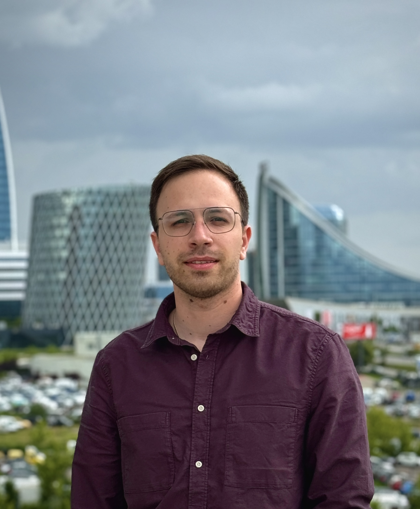

Галерия
Биография
Иво Капков е проектов ръководител, архитект и докторант, със специализация в индустриалните сгради и съоръжения.
Роден е на 1 юни 1996 г. в град Бургас. Израства в семейство на инженер-конструктор. През 2015 г. завършва с отличие средното си образование в Природо-математическа гимназия „Академик Никола Обрешков“, град Бургас. Продължава висшето си образование в Университета по архитектура, строителство и геодезия, град София. През 2021 г. е дипломиран със степен магистър, специализирайки в катедра „Промишлени и аграрни сгради“. Награден е от Камара на архитектите в България - РК София град за отлична разработка на дипломен проект.
След 2021 г. арх. Капков практикува като проектов ръководител и проектант на нови национални и международни индустриални обекти. Развива умения в проектирането на сгради и съоръжения, управление на инвестиционни процеси, координиране на проектни и строителни дейности, приложение и контрол на строително-информационни модели, както и в графично представяне, изготвяне на технически детайли и спецификации.
През 2023 г., след спечелен конкурс, арх. Капков е зачислен като редовен докторант към катедра „Индустриални сгради“ в Университета по архитектура, строителство и геодезия, град София. Област на неговата научно-изследователска дейност е въздействието на сглобяемите фасадни системи върху архитектурния образ на индустриалните сгради.
Членства и участия в организации:
- Камара на Архитектите в България, Регионална колегия – град Бургас
- Съюз на Архитектите в България, Дружество София – УАСГ
Езикови умения: английски, немски и български език.
Извънпрофесионални интереси: планинарство, ски, автомобилизъм.
